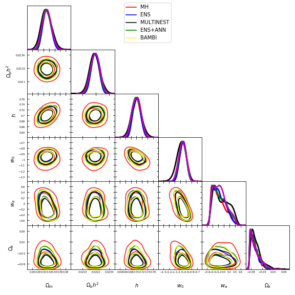

Samplers¶
SuperMC contains the nest samplers:
- Metropolis-Hastings.
- It is implemented in the MCMCAnalyzer class.
- BAMBI = MULTINEST + Artificial Neural Networks.
- Graff, P., Feroz, F., Hobson, M. P., & Lasenby, A. (2012). BAMBI: blind accelerated multimodal Bayesian inference. Monthly Notices of the Royal Astronomical Society, 421(1), 169-180..
- Ellipsoidal Nested Sampling with Artificial Neural Networks
Also, for a previous quickly test, SuperMC have MaxAnalyzer that analyze the most probably values of the parameters.
Sampler comparison¶
Note
To verify the consistency of the parameter estimation among the different samplers available, we have made the following graph.

We estimates the posteriors of the parameters of the owaCDM model (dark energy with timedependent equation-of-state in a model of unknown curvature) using Supernovae type Ia, Cosmic Chronometers (Hubble Distance) and BAO .